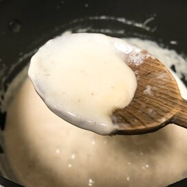

Alfredo Sauce

Description
Alfredo sauce is honestly so much better homemade than store bought. It doesn't take that much effort or break the bank.
Here are the directions on how I make my homemade alfredo sauce.
Ingredients
- 2 tbsp butter, unsalted
- 2 tbsp cream cheese
- 1/2 cup heavy cream
- 1 cup parmesean cheese, shredded
- 3 cloves of garlic (or how many you want, idgaf
- Half a bag of spinach, it's all gonna shrink anyway
- Italian seasoning, to taste
- Cayenne and/or Cajun seasoning, to taste
- Salt and Pepper, to taste
- 1/2 lemon for lemon juice and zest
Steps
- In medium low heat, melt butter and saute garlic in it until transculsent.
- Stir in cream cheese until melted.
- Add heavy cream, Italian seasonin, cayenne and/or Cajun seasoning, salt, pepper and spinach. Stir until spinach is wilted.
- Stir in parmesean cheese and let simmer until it is at the consistency you desire. If it's too thick, add in small bits of heavy cream at a time. Stir occassionally to avoid the dairy to boil over.
- Squeeze in lemon juice and stir throughout to keep from curdling.
- Taste test the whole way. Once you are statisfied with the taste and the consistency, it's done!
Back to Recipes
Main Page